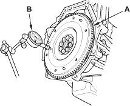
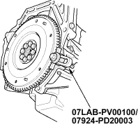
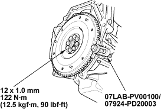

Flywheel Inspection
- Inspect the ring gear teeth for wear and damage.
- Inspect the clutch disc mating surface on the flywheel for wear, cracks and burning.
- Measure the flywheel (A) runout using a dial indicator (B) through at least two full turns with the engine installed. Push against the flywheel each time you turn it to take up the crankshaft thrust washer clearance. If the runout is more than the service limit, replace the flywheel and recheck the runout. Resurfacing the flywheel is not recommended.
Standard (New):
0.05 mm (0.002 in.) max.
Service Limit:
0.15 mm (0.006 in.)


Flywheel Replacement
- Install the special tool.

- Remove the flywheel mounting bolts in a criss-cross pattern in several steps, then remove the flywheel.
- Install the flywheel on the crankshaft, and install the mounting bolts finger-tight.
- Install the special tool, then torque the flywheel mounting bolts in a criss-cross pattern in several steps.
